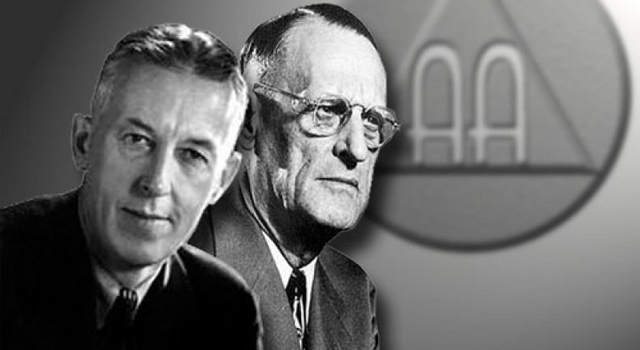

Bill W. & Dr. Bob
Alcoholics those lived to help and helped to live
Here's a Timeline of Bill W.'s life
- 1895 - Born in East Dorset, Vermont.
- 1913 - Bill met his wife Lois Burnham during the summer of 1913, while sailing on Vermont's Emerald Lake.
- 1918 - Married Lois on January 24, 1918, just before he left to serve in World War I as a 2nd Lieutenant in the Coast Artillery.